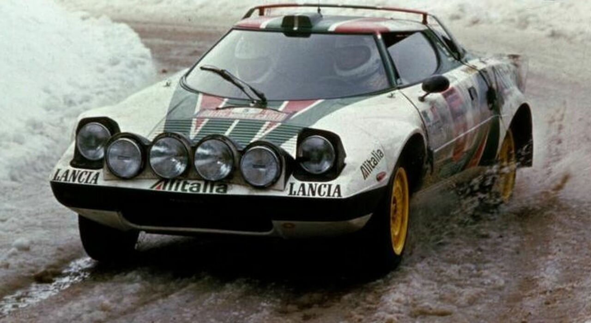
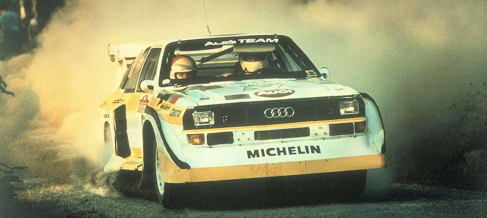
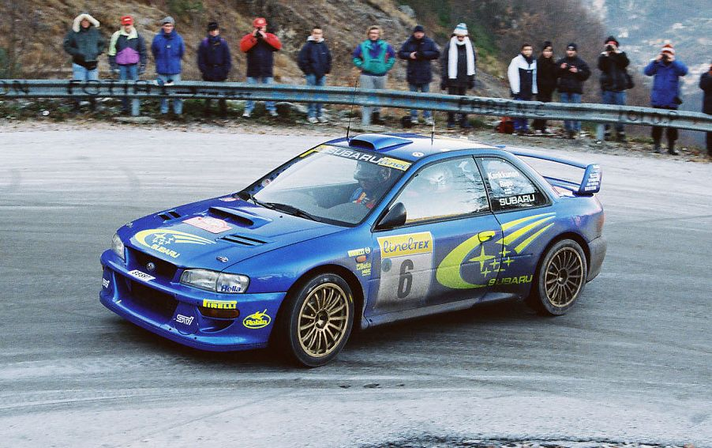

WRC moderno
Hoy en día, el campeonato sigue evolucionando con coches híbridos, nuevas normativas y jóvenes talentos. Toyota, Hyundai y M-Sport Ford compiten por el título con pilotos como Kalle Rovanperä, Tänak y Neuville.

El Campeonato Mundial de Rally (WRC) se estableció en 1973 como la primera competición anual de rallies organizada por la FIA. Desde entonces, ha evolucionado a lo largo de los años, con diferentes categorías de coches y reglamentos, hasta convertirse en la máxima categoría del automovilismo de rally. Las competiciones se llevan a cabo en diferentes superficies, como asfalto, grava, nieve y hielo, y los equipos compiten contra el cronómetro para completar los tramos de la manera más rápida posible.
En 1973 nació el campeonato con marcas como Alpine, Fiat, Lancia y Ford. Los vehículos eran relativamente simples comparados con los actuales, pero la habilidad de los pilotos y la dureza de los tramos hicieron que el WRC creciera rápidamente en popularidad.
El Grupo B es recordado como la época más espectacular y peligrosa del rally. Coches extremadamente potentes como el Audi Quattro o el Peugeot 205 T16 marcaron la historia. Sin embargo, su gran velocidad provocó varios accidentes graves y la categoría fue cancelada en 1986.
En esta época, marcas como Subaru, Mitsubishi, Ford y Citroën dominaron el campeonato. Pilotos como Colin McRae, Tommi Mäkinen y Sébastien Loeb se convirtieron en leyendas. La tecnología evolucionó enormemente y el WRC se consolidó como deporte global.
Hoy en día, el campeonato sigue evolucionando con coches híbridos, nuevas normativas y jóvenes talentos. Toyota, Hyundai y M-Sport Ford compiten por el título con pilotos como Kalle Rovanperä, Tänak y Neuville.